Справочник по Angular и React · модуль 3 · несколько экранов, публикация, расписание
3.3
Сборка и публикация на GitHub Pages
В этой главе начинается второе приложение модуля — «Мониторинг сайтов группы». Пока это одна страница со списком сайтов из файла sites.json. Приложение собирается командой npm run build в папку готовых файлов dist, отправляется в отдельный репозиторий на GitHub и публикуется на GitHub Pages: при каждой отправке кода конвейер GitHub Actions собирает и выкладывает сайт. Первая публикация даёт пустую страницу, вторая — ошибку загрузки списка. Обе ошибки связаны с тем, что сайт на Pages лежит в подпапке, и исправляются настройкой base и константой BASE_URL.
- Категория
- Сборка, публикация, GitHub Actions
- Уровень
- Начальный
- Что понадобится
- Node.js и VS Code из главы 1.1, аккаунт GitHub и Git, настроенный для отправки в репозиторий курса
- Результат
- Репозиторий
monitoringна GitHub и сайт по адресуhttps://<логин>.github.io/monitoring/, который обновляется после каждой отправки кода
§1Приложение «Мониторинг сайтов группы»
РазбираемсяЗачем второе приложение
Доска заявок работает с PocketBase, а PocketBase запущен в Docker на вашем компьютере. Если опубликовать доску в интернете, браузер посетителя будет искать сервер заявок по адресу localhost:8090 — на своём компьютере, где его нет. Поэтому для публикации нужно приложение, которому не нужен свой сервер.
«Мониторинг сайтов группы» — такое приложение. Проекты студентов группы опубликованы на GitHub Pages, и монитор показывает список этих сайтов. Список хранится в файле sites.json рядом с приложением. В следующей главе GitHub Actions будет каждую ночь открывать сайты из списка и записывать результаты в такой же файл, а приложение — показывать, какие сайты работают. В этой главе приложение только читает список и показывает его.
Приложение живёт отдельно от папки react-kurs: у него будет свой репозиторий monitoring на GitHub. Папка проекта создаётся рядом с react-kurs, на том же уровне.
ДелаемСоздаём проект и список сайтов
- Создайте проект
В терминале VS Code, открытом в папке
react-kurs, перейдите на уровень выше и создайте проект командой из главы 1.1. Флаг--no-interactiveотвечает на вопросы мастера значениями по умолчанию,--no-immediateне запускает установку сразу.Терминал · папка react-kurs cd .. npx create-vite@9.2.1 monitoring --template react-ts --no-interactive --no-immediate
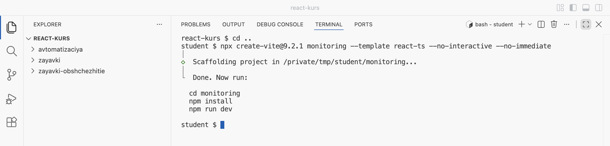
Проект monitoring создан рядом с react-kurs - Откройте папку проекта
В VS Code выберите File → Open Folder… и откройте папку
monitoring. Откройте терминал (Terminal → New Terminal) и установите зависимости.Терминал · папка monitoring npm install
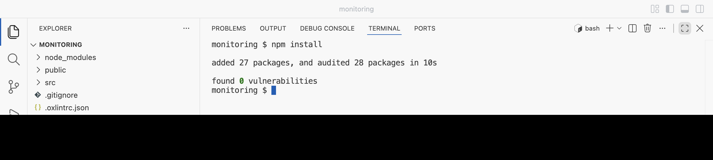
Зависимости установлены - Уберите заготовку
Шаблон Vite содержит страницу-пример со счётчиком. Удалите файл
src/App.cssи папкуsrc/assets: правой кнопкой мыши по ним в проводнике → Delete.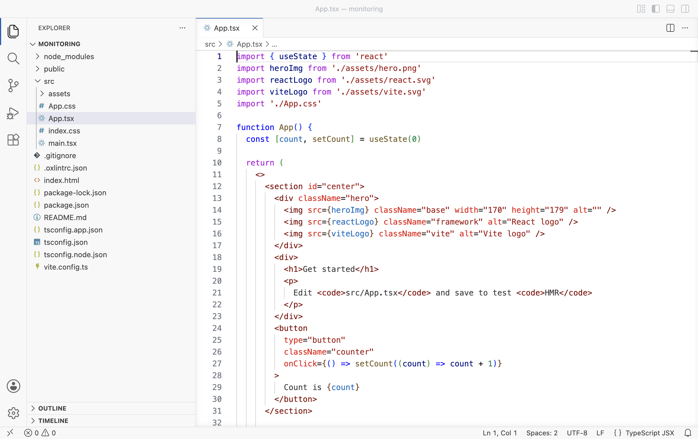
App.tsx из шаблона: картинки из assets и App.css - Замените index.html
Замените содержимое файла
index.htmlв корне проекта: язык страницы — русский, заголовок вкладки — название приложения.monitoring/index.html <!doctype html> <html lang="ru"> <head> <meta charset="UTF-8" /> <link rel="icon" type="image/svg+xml" href="/favicon.svg" /> <meta name="viewport" content="width=device-width, initial-scale=1.0" /> <title>Мониторинг сайтов группы</title> </head> <body> <div id="root"></div> <script type="module" src="/src/main.tsx"></script> </body> </html>
- Замените стили
Замените содержимое
src/index.css.monitoring/src/index.css * { box-sizing: border-box; } body { margin: 0; font-family: system-ui, 'Segoe UI', Roboto, sans-serif; background: #f5f6f9; color: #1f2430; } .header { padding: 24px 32px; background: #1f2430; color: #ffffff; } .header h1 { margin: 0; font-size: 28px; } .header p { margin: 6px 0 0; color: #c4cad8; } .main { max-width: 1000px; margin: 0 auto; padding: 24px 32px; } .sites { display: grid; grid-template-columns: repeat(auto-fill, minmax(280px, 1fr)); gap: 12px; margin: 0; padding: 0; list-style: none; } .site { padding: 16px; border: 1px solid #dfe3eb; border-radius: 8px; background: #ffffff; } .site h2 { margin: 0 0 6px; font-size: 18px; } .site a { color: #2f6fde; font-size: 14px; overflow-wrap: anywhere; } .load-error { padding: 16px; border-radius: 8px; background: #fde8e8; color: #b42318; } - Опишите тип сайта
В папке
srcсоздайте файлtypes.ts.monitoring/src/types.ts export type Site = { id: string name: string url: string }
- Создайте список сайтов
В папке
publicсоздайте папкуdata, в ней — файлsites.json. В примере — сайты справочников автора. Для своей группы впишите адреса проектов однокурсников на GitHub Pages: у каждого сайта короткийidлатиницей, название и адрес.monitoring/public/data/sites.json [ { "id": "git", "name": "Справочник по Git и GitHub", "url": "https://maximbytecamp.github.io/git_github_makarov/" }, { "id": "mongodb", "name": "Справочник по MongoDB", "url": "https://maximbytecamp.github.io/mongodb_theory_makarov/" }, { "id": "english", "name": "Разговорный английский", "url": "https://maximbytecamp.github.io/english_makarov/" }, { "id": "sysprog", "name": "Системное программирование", "url": "https://maximbytecamp.github.io/sysprog_makarov/" }, { "id": "sphinx", "name": "Отчёт кафе на Sphinx", "url": "https://maximbytecamp.github.io/otchet-kafe-sphinx/" }, { "id": "staryy", "name": "Старый проект", "url": "https://maximbytecamp.github.io/staryy-proekt/" } ]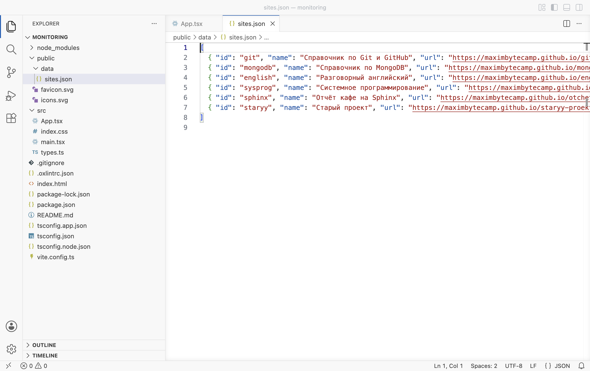
public/data/sites.json - Замените App.tsx
Замените содержимое
src/App.tsx. Загрузка устроена как в главе 2.3: эффект с флажкомignore, ошибка в состоянии.monitoring/src/App.tsx import { useEffect, useState } from 'react' import type { Site } from './types' function App() { const [sites, setSites] = useState<Site[]>([]) const [error, setError] = useState('') useEffect(() => { let ignore = false async function load() { try { const response = await fetch('/data/sites.json') if (!response.ok) { throw new Error(`Список сайтов не загрузился: код ${response.status}.`) } const list: Site[] = await response.json() if (!ignore) { setSites(list) } } catch (e) { if (!ignore) { setError((e as Error).message) } } } load() return () => { ignore = true } }, []) return ( <> <header className="header"> <h1>Мониторинг сайтов группы</h1> <p>Сайты, которые студенты группы опубликовали на GitHub Pages</p> </header> <main className="main"> {error !== '' && <p className="load-error">{error}</p>} <ul className="sites"> {sites.map((site) => ( <li key={site.id} className="site"> <h2>{site.name}</h2> <a href={site.url} target="_blank" rel="noreferrer"> {site.url} </a> </li> ))} </ul> </main> </> ) } export default App
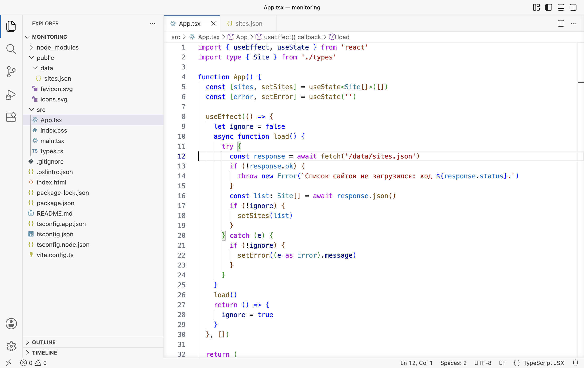
App.tsx загружает /data/sites.json - Запустите приложение
Выполните в терминале команду и откройте адрес
localhost:5173.Терминал · папка monitoring npm run dev
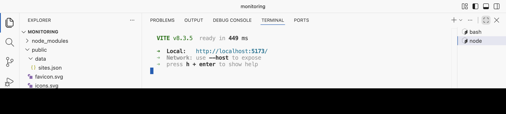
Сервер разработки запущен Список сайтов в режиме разработки
РазбираемсяПапка public
Файлы из папки public Vite отдаёт как есть, по пути от корня сайта: public/data/sites.json доступен по адресу /data/sites.json. В отличие от файлов src, они не проходят через сборку и не попадают внутрь кода приложения. Поэтому их можно заменить, не пересобирая приложение, — так в главе 3.4 будут обновляться результаты проверок.
Запрос fetch('/data/sites.json') работает как запрос к PocketBase в главе 2.3, только в ответе приходит содержимое готового файла. Запись const list: Site[] = await response.json() сообщает TypeScript тип прочитанных данных: в файле JSON типов нет.
В режиме разработки страницу отдаёт сервер Vite. Чтобы опубликовать её, нужны готовые файлы, которые может отдать любой веб-сервер.
§2Сборка: папка dist
ДелаемСобираем приложение и смотрим результат
- Остановите сервер и соберите
Остановите
npm run devсочетанием Ctrl+C в терминале и выполните сборку.Терминал · папка monitoring npm run build
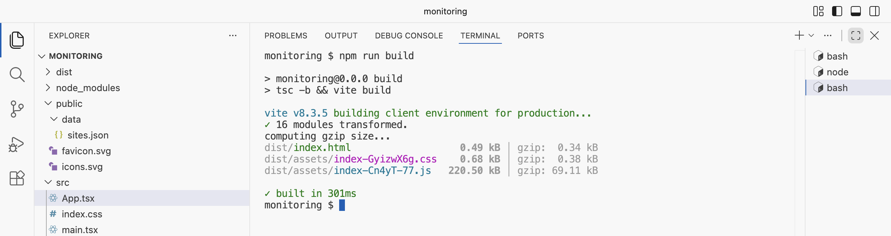
Сборка: три файла в папке dist - Откройте dist/index.html
В проводнике появилась папка
dist. Раскройте её и откройтеdist/index.html.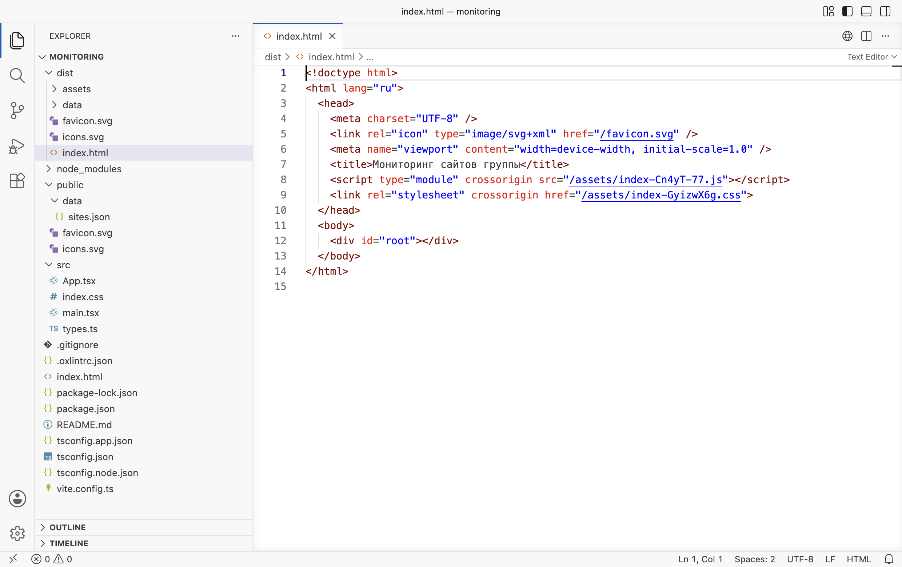
Собранный index.html ссылается на файлы из /assets/ - Откройте файл в браузере
Найдите папку
distв Проводнике Windows или в Finder и откройтеindex.htmlдвойным щелчком. Откройте DevTools (F12) на вкладке Console и обновите страницу. Страница пустая, в консоли ошибки загрузкиfile:///assets/….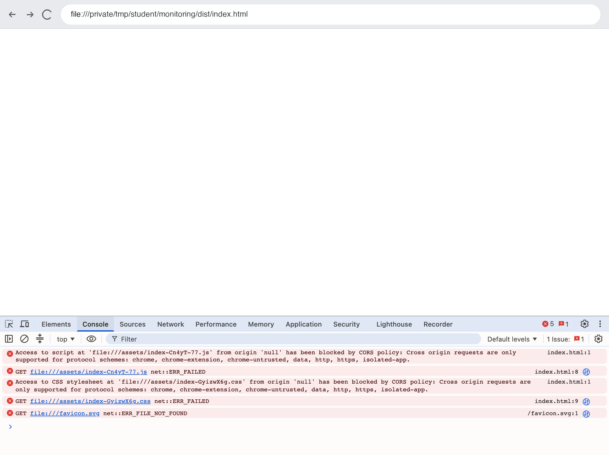
Файл, открытый напрямую, не работает - Запустите preview
В терминале VS Code выполните команду и откройте адрес
localhost:4173.Терминал · папка monitoring npm run preview
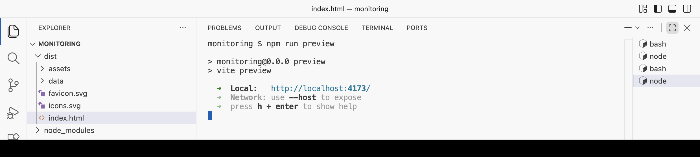
preview отдаёт папку dist по адресу localhost:4173 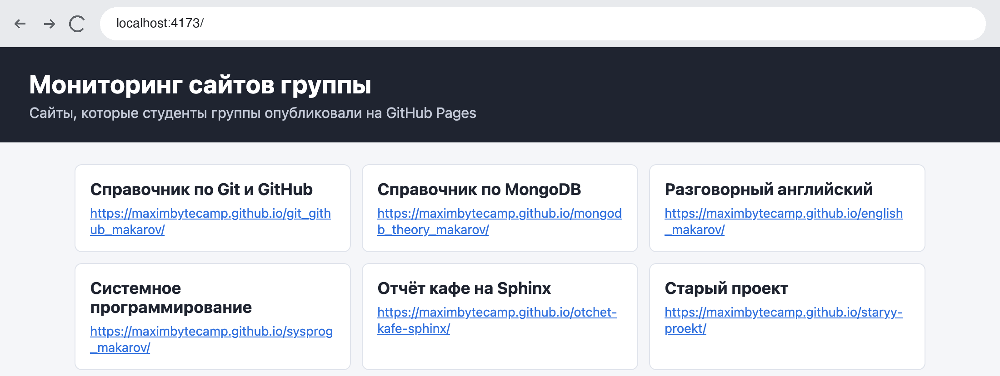
Собранное приложение работает Остановите
previewсочетанием Ctrl+C.
РазбираемсяЧто делает сборка
Браузер выполняет только JavaScript; TypeScript и JSX он не читает. В режиме разработки сервер Vite переводит каждый файл в JavaScript в момент запроса — поэтому изменения видны сразу после сохранения. Сборка (build) делает этот перевод заранее и один раз: команда npm run build сначала проверяет типы (tsc -b), затем vite build собирает все модули приложения и библиотеку React в один файл JavaScript, все стили — в один файл CSS и записывает их в папку dist вместе с index.html и содержимым public.
Пока книга пишется, автор правит рукопись и сразу перечитывает изменённую главу. В типографию уходит свёрстанный макет: все главы собраны в один файл, ничего не нужно переводить или доделывать. Режим разработки — рукопись, папка dist — макет.
| Файл в dist | Откуда взялся |
|---|---|
index.html | из index.html проекта; ссылка на /src/main.tsx заменена ссылками на собранные файлы |
assets/index-Cn4yT-77.js | весь код из src и библиотеки React, 220 КБ |
assets/index-GyizwX6g.css | стили из src/index.css |
data/sites.json, favicon.svg, icons.svg | скопированы из public без изменений |
Набор букв в имени файла — хеш содержимого: при каждом изменении кода он другой. Браузер хранит загруженные файлы в кэше, а файл с новым именем браузер скачивает заново, поэтому посетитель получает новую версию.
Файл, открытый двойным щелчком, браузер загружает по адресу file://. Ссылка /assets/index-Cn4yT-77.js начинается с косой черты и означает «от корня сайта», а у адреса file:// корень — корень диска. Файла /assets/… там нет, к тому же браузер запрещает модулям JavaScript загружаться с file:// (ошибка CORS policy в консоли). Поэтому собранное приложение проверяют через веб-сервер: npm run preview запускает простой сервер, который отдаёт папку dist. GitHub Pages — такой же сервер, только в интернете.
Папка dist в Git не попадает: она указана в .gitignore шаблона Vite. На GitHub отправляется исходный код, а собирать его будет GitHub Actions.
§3Репозиторий на GitHub
ДелаемСоздаём репозиторий monitoring и отправляем код
- Создайте репозиторий
На github.com нажмите + в правом верхнем углу → New repository. Впишите имя
monitoring(1), оставьте видимость Public (2), README, .gitignore и лицензию не добавляйте. Нажмите Create repository (3).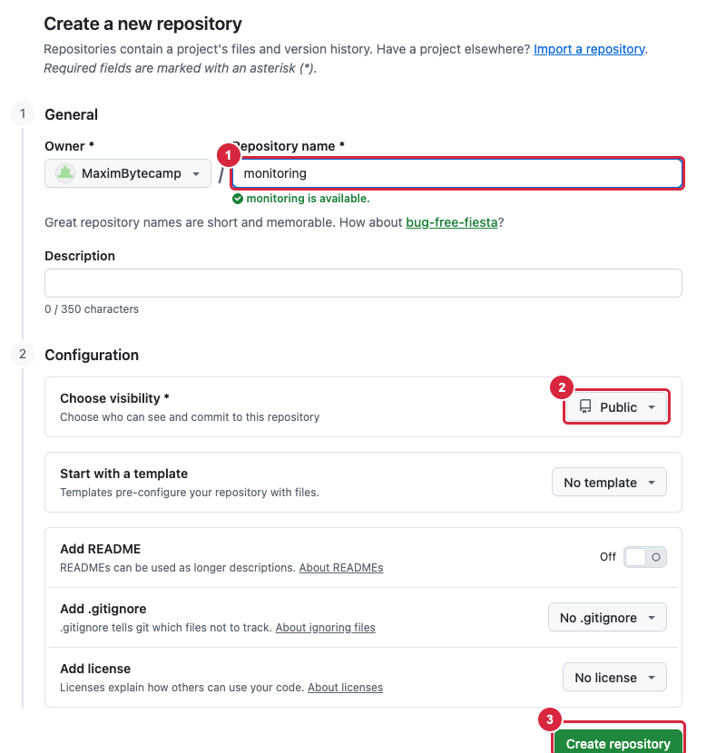
Новый публичный репозиторий monitoring - Посмотрите команды
Репозиторий пустой, и GitHub показывает команды для отправки кода. Нужен второй блок — «…or push an existing repository from the command line»: проект уже есть на компьютере. Перед этими командами нужно создать локальный репозиторий и первый коммит.
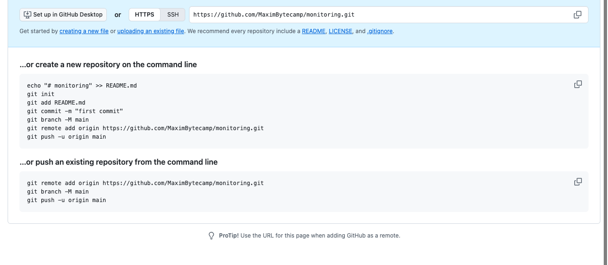
Команды для существующего проекта - Отправьте код
В терминале VS Code в папке
monitoringвыполните команды. В адресе заменитеMaximBytecampсвоим логином — его можно скопировать со страницы GitHub.Терминал · папка monitoring git init git add . git commit -m "Список сайтов группы" git branch -M main git remote add origin https://github.com/MaximBytecamp/monitoring.git git push -u origin main
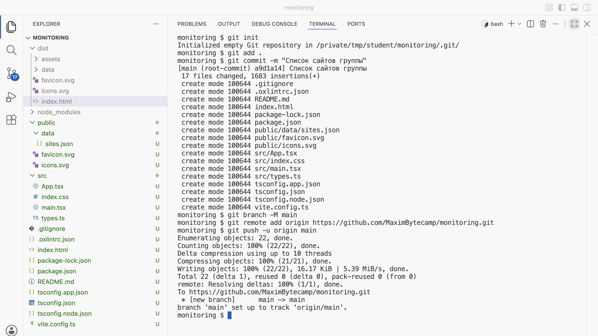
main" loading="lazy">17 файлов отправлены в ветку main - Проверьте репозиторий
Обновите страницу репозитория на GitHub. Видны папки
publicиsrcи файлы проекта.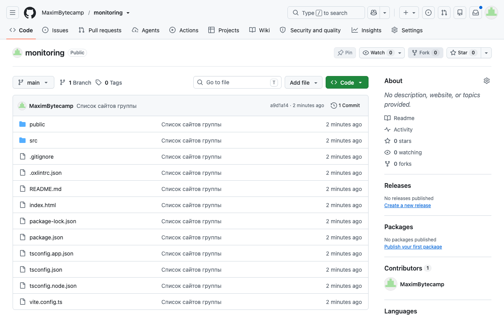
Код на GitHub
РазбираемсяПочему репозиторий отдельный и публичный
Список create mode на кадре — 17 файлов, и папок dist и node_modules среди них нет: обе указаны в .gitignore. В репозитории хранится только то, из чего приложение можно собрать заново.
GitHub Pages на бесплатном тарифе публикует сайты только из публичных репозиториев. Отдельный репозиторий нужен ещё и потому, что в главе 3.4 GitHub Actions будет каждую ночь добавлять в него коммит с результатами проверок; в репозитории курса react-kurs эти коммиты смешались бы с вашими работами.
Код на GitHub. Осталось включить Pages и описать, как собирать и публиковать сайт.
§4Публикация через GitHub Actions
ДелаемВключаем Pages и добавляем конвейер публикации
- Откройте настройки Pages
В репозитории откройте Settings (1) → Pages (2). В разделе Build and deployment нажмите на список Source (3).
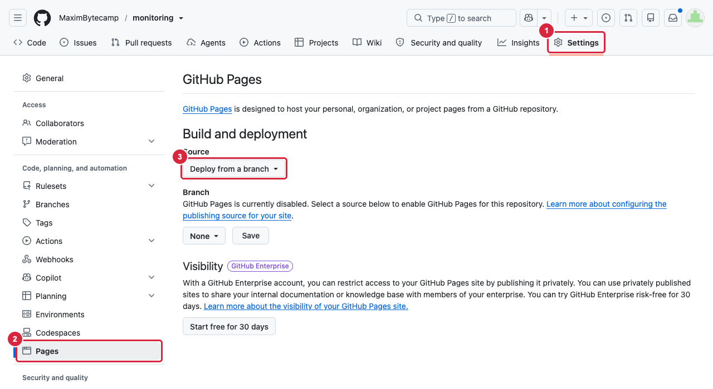
Настройки Pages - Выберите GitHub Actions
В списке выберите GitHub Actions (4).
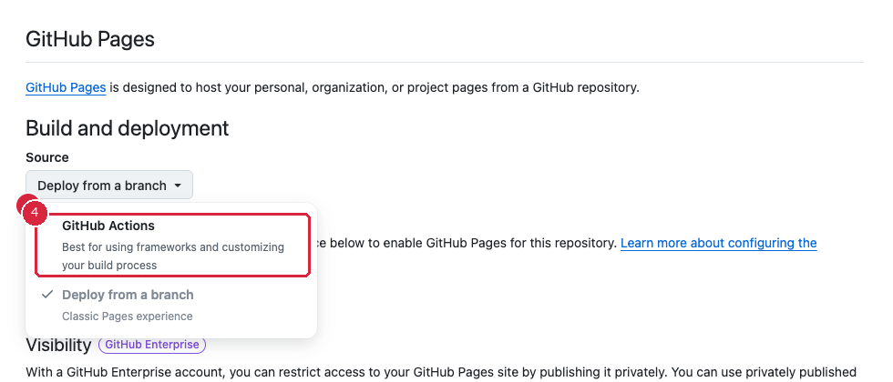
Источник публикации — GitHub Actions GitHub предлагает готовые шаблоны конвейеров. Они не нужны: файл конвейера будет создан в проекте.
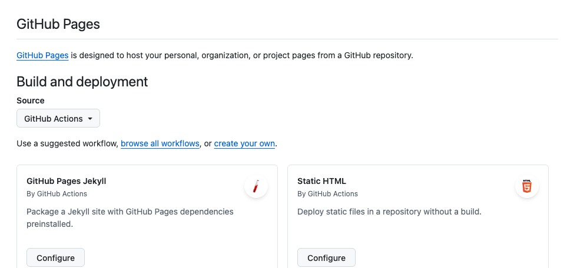
Источник выбран, сохранять ничего не нужно - Создайте файл конвейера
В VS Code в корне проекта создайте папку
.github, в ней — папкуworkflows, в ней — файлdeploy.yml. Точка в начале имени.githubобязательна.monitoring/.github/workflows/deploy.yml name: Публикация на GitHub Pages on: push: branches: [main] workflow_dispatch: permissions: contents: read pages: write id-token: write concurrency: group: pages cancel-in-progress: false jobs: deploy: runs-on: ubuntu-latest environment: name: github-pages url: ${{ steps.deployment.outputs.page_url }} steps: - name: Получить код uses: actions/checkout@v7 - name: Установить Node.js uses: actions/setup-node@v7 with: node-version: 24 cache: npm - name: Установить зависимости run: npm ci - name: Собрать сайт run: npm run build - name: Упаковать папку dist uses: actions/upload-pages-artifact@v5 with: path: dist - name: Опубликовать id: deployment uses: actions/deploy-pages@v5
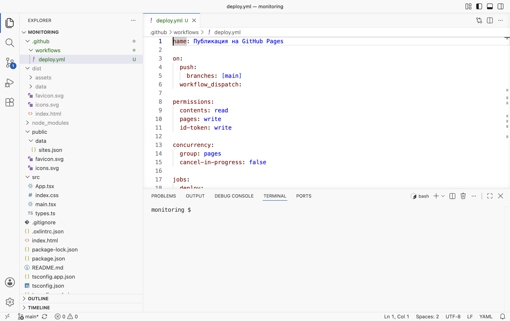
Файл конвейера .github/workflows/deploy.yml - Отправьте файл
Выполните команды в терминале.
Терминал · папка monitoring git add . git commit -m "Публикация на GitHub Pages" git push
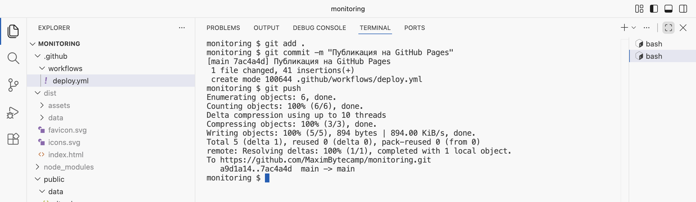
main" loading="lazy">Конвейер отправлен - Дождитесь публикации
Откройте вкладку Actions репозитория. Запуск «Публикация на GitHub Pages» начался после отправки без нажатия кнопок. Через минуту у него зелёная галочка.
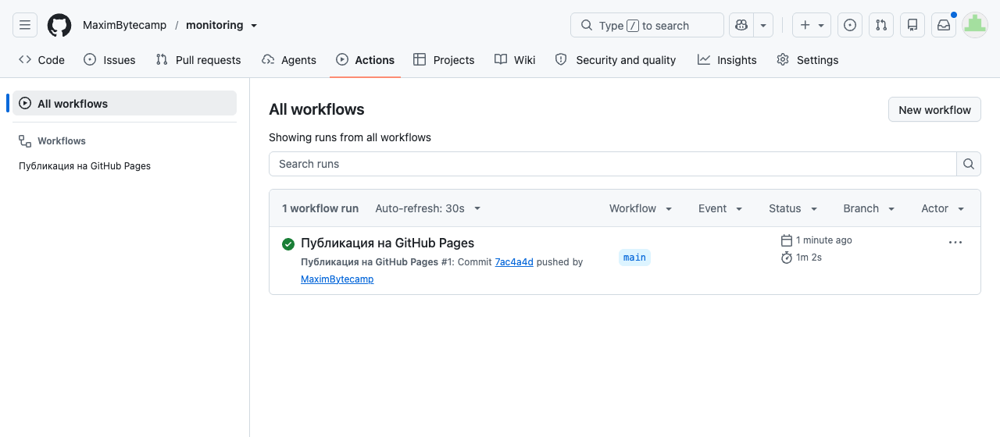
Запуск завершён за 1 мин 2 с Нажмите на запуск. В карточке задания
deploy— адрес опубликованного сайта.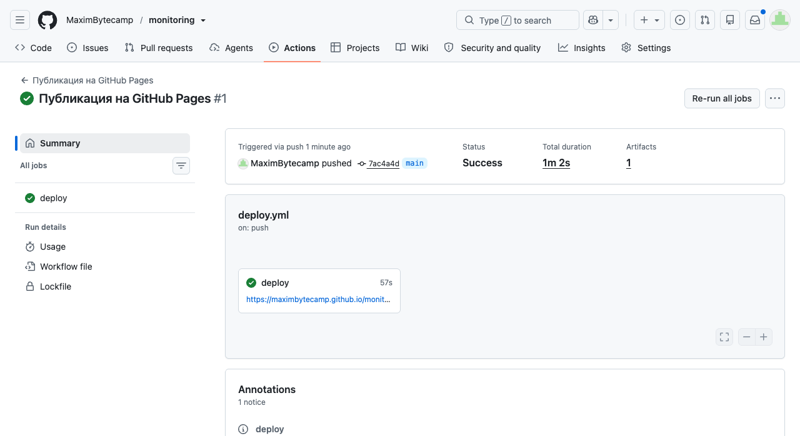
Задание deploy и адрес сайта - Откройте сайт
Откройте адрес из карточки —
https://<логин>.github.io/monitoring/— с открытой консолью DevTools. Страница пустая, в консоли две ошибки404 (Not Found)для файлов/assets/….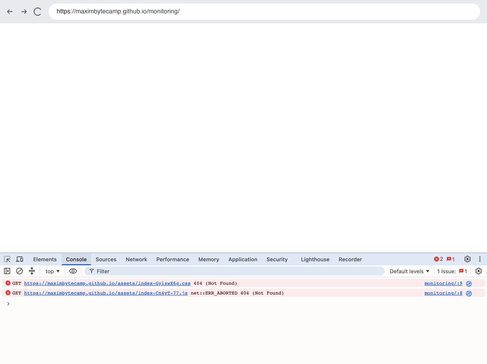
Первая публикация: пустая страница
РазбираемсяЧто записано в конвейере
GitHub Actions — служба GitHub, которая выполняет команды на своих компьютерах по событиям в репозитории. Порядок действий описывается в файле конвейера (workflow) на языке YAML в папке .github/workflows. YAML — формат «ключ: значение», где вложенность задаётся отступами из пробелов.
name: Публикация на GitHub Pages on: 1 push: branches: [main] workflow_dispatch: permissions: 2 contents: read pages: write id-token: write concurrency: 3 group: pages cancel-in-progress: false jobs: deploy: runs-on: ubuntu-latest 4 environment: 5 name: github-pages url: ${{ steps.deployment.outputs.page_url }} steps: - name: Получить код uses: actions/checkout@v7 6 - name: Установить Node.js uses: actions/setup-node@v7 7 with: node-version: 24 cache: npm - name: Установить зависимости run: npm ci 8 - name: Собрать сайт run: npm run build - name: Упаковать папку dist uses: actions/upload-pages-artifact@v5 9 with: path: dist - name: Опубликовать id: deployment uses: actions/deploy-pages@v5 10
- 1
on— когда запускать: при отправке (push) в веткуmainи вручную кнопкой Run workflow на вкладке Actions (workflow_dispatch). - 2
Права конвейера: читать код, записывать в Pages и получать токен (
id-token), которым Pages проверяет, что публикацию запустил этот репозиторий. - 3
Одновременно выполняется только одна публикация. Следующая ждёт, пока закончится текущая.
- 4
Задание
deployвыполняется на чистой виртуальной машине Ubuntu, которую GitHub выделяет на время запуска. После запуска машина удаляется. - 5
Окружение
github-pages: адрес из шага публикации появляется в карточке задания — его видно на кадре. - 6
Шаг
usesвыполняет готовое действие из каталога GitHub.actions/checkout@v7скачивает код репозитория на машину;@v7— версия действия. - 7
Устанавливает Node.js 24 — ту же версию, что на вашем компьютере.
cache: npmсохраняет скачанные пакеты между запусками, иnpm ciберёт их из кэша вместо загрузки из интернета. - 8
Шаг
runвыполняет команду терминала.npm ciставит пакеты строго поpackage-lock.json, затемnpm run buildсобираетdist— те же команды, что вы выполняли сами. - 9
Упаковывает папку
distв архив-артефакт — на странице запуска он виден как «Artifacts 1». - 10
Передаёт артефакт в GitHub Pages. С этого момента файлы из
distдоступны по адресу сайта.
От git push до сайта
После настройки сайт обновляется сам: каждая отправка в main запускает сборку и публикацию.
Конвейер отработал без ошибок, а страница пустая. Ответ — в адресах из консоли.
§5Сайт в подпапке: base и BASE_URL
РазбираемсяПочему страница пустая
Сайт репозитория monitoring опубликован по адресу maximbytecamp.github.io/monitoring/ — в подпапке с именем репозитория. Корень maximbytecamp.github.io/ относится ко всему аккаунту. Собранный index.html ссылается на /assets/index-Cn4yT-77.js, и косая черта в начале ведёт в корень: браузер запросил maximbytecamp.github.io/assets/…, а файл лежит в maximbytecamp.github.io/monitoring/assets/…. Отсюда две ошибки 404 и пустая страница.
Куда ведёт путь /assets/… на GitHub Pages
Локально сайт открывается с корня — localhost:5173/ и localhost:4173/, — поэтому там ошибки не было.
Настройка base в vite.config.ts сообщает Vite, в какой папке будет лежать сайт. При сборке Vite допишет её ко всем ссылкам в index.html.
ДелаемУказываем base и публикуем снова
- Добавьте base
Замените содержимое
vite.config.ts. Имя папки совпадает с именем репозитория, косые черты с обеих сторон обязательны.monitoring/vite.config.ts import react from '@vitejs/plugin-react' import { defineConfig } from 'vite' // https://vite.dev/config/ export default defineConfig({ plugins: [react()], base: '/monitoring/', })
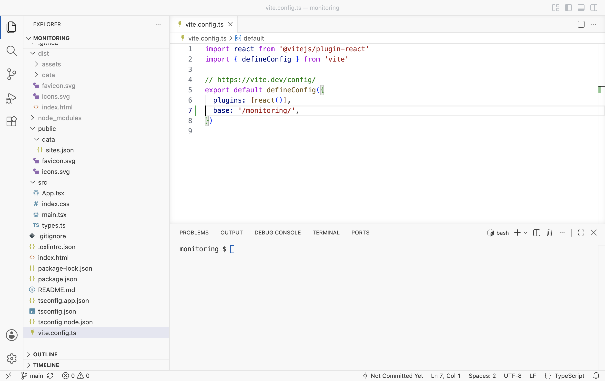
base: '/monitoring/' - Отправьте изменение
Терминал · папка monitoring git add . git commit -m "Адрес сайта в подпапке monitoring" git push
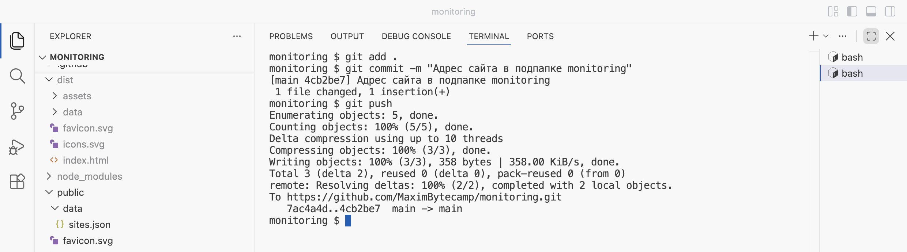
Изменение отправлено - Откройте сайт
Дождитесь зелёной галочки на вкладке Actions (около 25 секунд) и обновите страницу сайта. Шапка появилась, но вместо списка — «Список сайтов не загрузился: код 404.», в консоли ошибка для
/data/sites.json.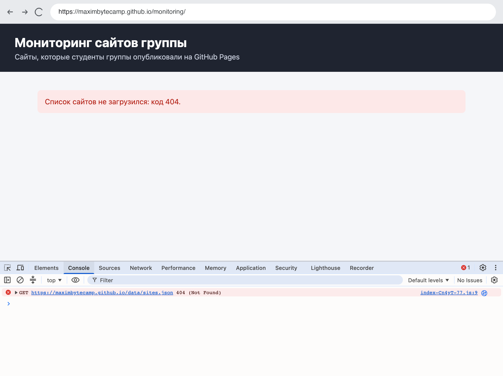
Приложение загрузилось, список — нет
РазбираемсяПуть внутри кода
base исправил ссылки в index.html: их Vite обрабатывает при сборке. Строку '/data/sites.json' в fetch Vite не меняет — это обычный текст внутри кода. Запрос снова ушёл в корень maximbytecamp.github.io/data/sites.json.
Для таких путей Vite даёт константу import.meta.env.BASE_URL. При сборке на её место подставляется значение base: '/monitoring/'. Без base её значение '/'. Путь, собранный из неё, верен и на компьютере, и на Pages.
ДелаемПуть к данным от BASE_URL
- Исправьте путь
В
src/App.tsxзамените строку 12 на строку ниже. Кавычки — обратные, как в шаблонных строках главы 3.1.App.tsx · строка 12 const response = await fetch(`${import.meta.env.BASE_URL}data/sites.json`)
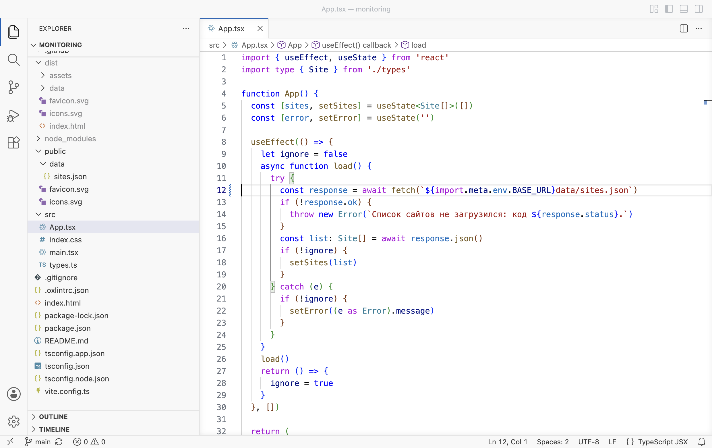
fetch с import.meta.env.BASE_URL - Отправьте изменение
Терминал · папка monitoring git add . git commit -m "Путь к sites.json от BASE_URL" git push
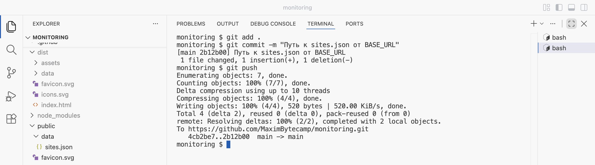
Исправление отправлено - Проверьте запуски
На вкладке Actions — три запуска, по одному на каждую отправку. Повторные заняли около 25 секунд.
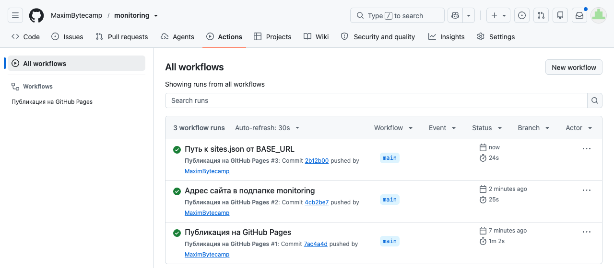
Три публикации - Откройте сайт
Обновите страницу сайта. Список из шести сайтов на месте, ошибок в консоли нет.
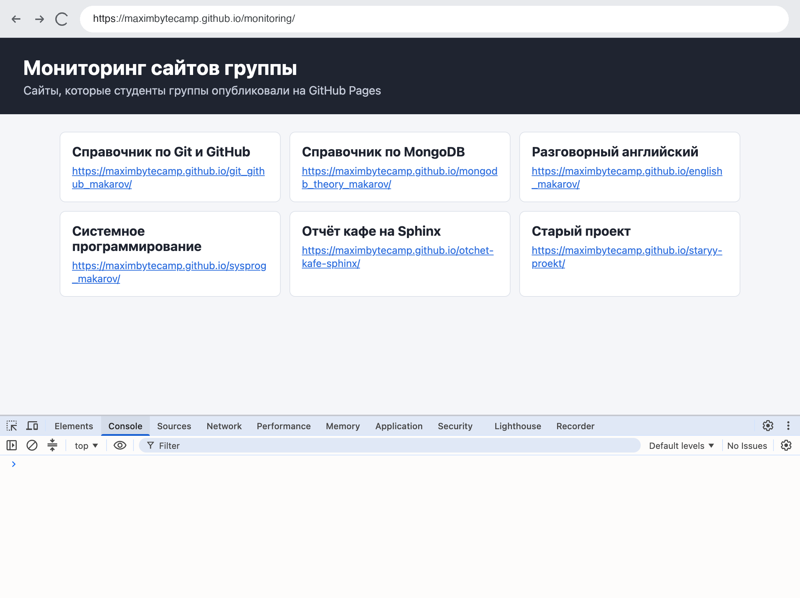
Сайт опубликован
Проверить сборку с base можно и на компьютере: после npm run build команда npm run preview откроет сайт по адресу localhost:4173/monitoring/ — с той же подпапкой, что на Pages.
У приложения одна страница. Когда страниц несколько, у Pages есть ещё одна особенность — с прямыми ссылками.
§6Прямые ссылки на страницы приложения
РазбираемсяЧем Pages отличается от сервера Vite
В главе 3.1 сервер Vite на любой путь отдавал index.html, и страницу выбирал BrowserRouter. GitHub Pages так не делает: он отдаёт только существующие файлы. Адрес maximbytecamp.github.io/monitoring/nope возвращает код 404 и стандартную страницу GitHub «Page not found · GitHub Pages» с текстом «File not found». Для приложения с маршрутами это значит: переход по ссылкам внутри приложения работает, а прямая ссылка на страницу, отправленная в мессенджере, и F5 на ней дают страницу ошибки GitHub.
Если в опубликованной папке есть файл 404.html, Pages отдаёт его вместо стандартной страницы ошибки. Поэтому приложения с маршрутами публикуют с копией index.html под именем 404.html: на любой несуществующий путь загружается приложение, и BrowserRouter показывает нужную страницу. Код ответа при этом остаётся 404, но на экране — приложение. Копию делает шаг конвейера после сборки:
- name: Копия index.html для прямых ссылок
run: cp dist/index.html dist/404.htmlДля BrowserRouter на Pages нужен ещё атрибут basename — та же подпапка, что в base: <BrowserRouter basename={import.meta.env.BASE_URL}>. Оба изменения понадобятся, когда у монитора появятся страницы отдельных сайтов.
Сайт обновляется при каждой отправке кода. Глава 3.4 запускает конвейер по расписанию: ночью GitHub Actions проверяет сайты из списка и публикует результаты.
§7Частые ошибки
Сообщения получены в проекте monitoring: в консоли браузера, в терминале и на GitHub.
| Что видно | Почему | Что сделать |
|---|---|---|
Пустая страница при открытии dist/index.html двойным щелчком, в консоли blocked by CORS policy и file:///assets/… net::ERR_FAILED | Собранное приложение открыто без веб-сервера | Проверять командой npm run preview |
Пустая страница на Pages, в консоли GET https://<логин>.github.io/assets/index-….js 404 (Not Found) | В vite.config.ts нет base, ссылки ведут в корень аккаунта | Добавить base: '/monitoring/' с именем своего репозитория |
На Pages «Список сайтов не загрузился: код 404.», в консоли …github.io/data/sites.json 404 | Путь в fetch начинается с / и не учитывает подпапку | Собирать путь от import.meta.env.BASE_URL |
| После отправки на вкладке Actions нет ни одного запуска | Файл лежит не в .github/workflows (например, github/workflows без точки) или ветка называется не main | Проверить путь файла и выполнить git branch -M main |
| Запуск с красным крестиком на шаге «Опубликовать» | В Settings → Pages источник не переключён на GitHub Actions | Выбрать Source: GitHub Actions и перезапустить кнопкой Re-run all jobs |
| Запуск с красным крестиком на шаге «Собрать сайт» | Ошибка TypeScript: npm run build сначала выполняет tsc -b | Выполнить npm run build на компьютере, исправить ошибку, отправить снова |
| Прямая ссылка на страницу приложения даёт страницу GitHub «File not found» | Pages отдаёт только существующие файлы | Добавить в конвейер копию index.html в 404.html |
§8Проверьте себя
Почему доску заявок нельзя опубликовать на Pages в нынешнем виде?
Она получает заявки с PocketBase по адресу localhost:8090. У посетителя сайта этот адрес ведёт на его собственный компьютер, где PocketBase нет.
Чем папка dist отличается от папки src?
В src — исходный код на TypeScript и JSX, его переводит в JavaScript сервер Vite при разработке. В dist — готовые файлы после сборки: один JavaScript, один CSS, index.html и копия public; их отдаёт любой веб-сервер.
Почему dist не отправляют в Git?
Её можно собрать из исходного кода, и при каждой сборке имена файлов меняются. Собирает её конвейер на GitHub Actions.
Что происходит после git push в ветку main?
GitHub запускает deploy.yml на машине Ubuntu: скачивает код, ставит Node.js и пакеты, собирает dist, упаковывает его в артефакт и передаёт в Pages.
Зачем base, если есть BASE_URL, и наоборот?
base меняет пути, которые Vite обрабатывает при сборке: ссылки в index.html. BASE_URL — значение base для путей внутри кода, которые Vite не меняет, например в fetch.
Репозиторий назвали site-monitor. Каким будет адрес сайта и значение base?
Адрес https://<логин>.github.io/site-monitor/, base: '/site-monitor/'.
Шпаргалка
npm run build → папка distnpm run preview → localhost:4173public, путь от корня сайтаbase: '/monitoring/' в vite.config.ts`${import.meta.env.BASE_URL}data/sites.json`.github/workflows/deploy.yml: checkout, setup-node, npm ci, build, upload-pages-artifact, deploy-pagescp dist/index.html dist/404.htmlИтог главы
Приложение «Мониторинг сайтов группы» читает список сайтов из public/data/sites.json и не зависит от своего сервера, поэтому его можно опубликовать на GitHub Pages. Сборка npm run build переводит TypeScript и JSX в готовые файлы папки dist: один JavaScript с хешем в имени, один CSS, index.html и копию public. Такие файлы работают только через веб-сервер — npm run preview на компьютере или Pages в интернете. Код хранится в отдельном публичном репозитории monitoring без dist и node_modules; конвейер .github/workflows/deploy.yml при каждой отправке в main собирает сайт на машине GitHub и передаёт dist в Pages, источник которого переключён на GitHub Actions. Сайт на Pages лежит в подпапке с именем репозитория: ссылки сборки исправляет настройка base, пути внутри кода собираются от import.meta.env.BASE_URL. Для приложений с маршрутами конвейер дополнительно копирует index.html в 404.html.
Источники
- Vite — Deploying a Static Site: GitHub Pages
- Vite — Building for Production: Public Base Path
- Vite — Static Asset Handling: The public Directory
- GitHub Docs — Configuring a publishing source for your GitHub Pages site
- GitHub Docs — Creating a custom 404 page for your GitHub Pages site
- GitHub Docs — Workflow syntax for GitHub Actions